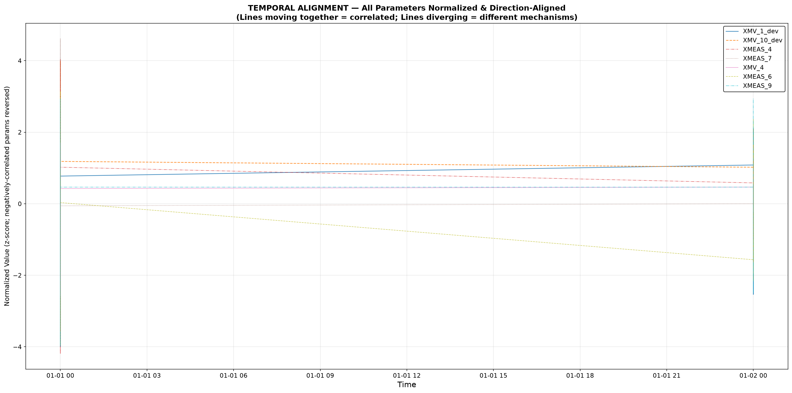
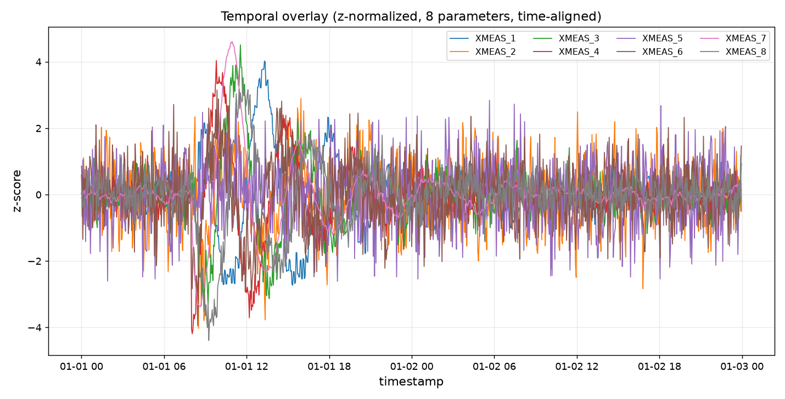

结论（BLUF）
DETERMINED · 82/100 HIGH
流股4（A+C 混合进料）上游供给压力损失：异常起始（第 161 样本）XMEAS_4 进料流量瞬态跌落 -12.29σ，控制器将 XMV_4 进料阀开大 +25.13%（瞬态 +18.73σ 后稳态保持 +12.24σ）使进料流量完全恢复（稳态偏移 -0.25σ），反应器压力瞬态波动后重新受控，其余进料与全部被控量稳态归零——补偿成功的供给侧扰动指纹完整。判为 DETERMINED@0.82：机理（流股4 供给压力损失，含 C header）已确证；上游 header 的具体物理成因需上游压力测点方可进一步归因。
判别性量化对比
| 通道 | 瞬态/稳态 |
|---|---|
| XMEAS_4 进料流量 | onset 瞬态 -12.29σ → held -0.25σ（恢复） |
| XMV_4 进料阀开度 | +18.73σ → held +12.24σ（+25.13%，补偿保持） |
| XMEAS_7 反应器压力 | -27.57/37.85σ → held 0.01σ（重控） |
| 其余进料/被控量 | held ≤|0.25|σ（扰动局限于流股4） |
竞争假设与排除
| 假设 | 判定 | 依据 |
|---|---|---|
| H1 流股4 供给压力损失（XMV_4 补偿） | 存续（判定） | 阀门口径关系 + 三段结构 |
| H2 反应器侧独立扰动 | 排除 | 冷却通道 held≈0 + 传播方向 |
| H3 XMV_4 仪表链漂移 | 排除 | 流量真实跌落与恢复 |
| H4 需求侧变更 | 排除 | 产量未变 + 非设定迁移形态 |
| H5 汽提塔侧根源 | 排除 | 无 held 偏移且时序滞后 |
上游 header 成因（管路阻力 vs 上游设备）不可分 — 需补装流股4 上游压力测点。
可视化证据


选图决策 adaptive_chart_plan.json · 对齐溯源 time_alignment.json
机理链（三段结构）
| 阶段 | 通道表现 | 物理含义 |
|---|---|---|
| ① 瞬跌 | XMEAS_4 -12.29σ（onset 瞬态） | 流股4 供给压力损失即时影响 |
| ② 补偿 | XMV_4 瞬态 +18.73σ → 开大至 +25.13% 并保持 | 控制器开阀维持流量设定 |
| ③ 保持 | XMEAS_4 held -0.25σ；产量维持 | 补偿成功，生产未受影响 |
传播方向：流股4 进料 → 反应器压力瞬态 → 重控归零；其余进料阀 held ≤0.25σ（扰动局限于流股4）。
置信度审计
| 因子 | 权重 | 得分 | 依据 |
|---|---|---|---|
| 统计强度 | 25 | 23 | 三段结构跨 4 通道一致，瞬态幅度 12-38σ |
| 物理合理性 | 25 | 24 | 阀门口径关系唯一自洽 |
| 时间证据 | 20 | 20 | onset 对齐 + 单向传播 |
| 混杂缺失 | 20 | 17 | 无上游 header 压力测点 |
| 症状完备性 | 10 | 8 | 次级方差扰动机理未定位 |
五因子 92 → INDISTINGUISHABLE_COMPETING_SET 理由码帽 → 82/100（上游成因层不可分）。